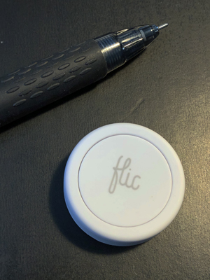
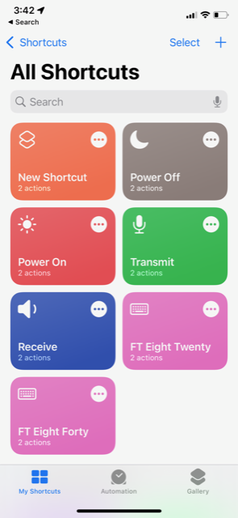
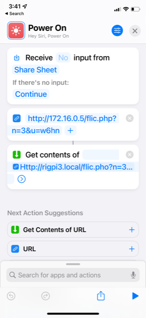

|
<< Click to Display Table of Contents >> Navigation: Other Programs > |
Flic is a remote control switch that uses Bluetooth for communicating with phones, tablets, and Mac computers. For purchase a Flic or more information go to:

The Flic has three modes: single, double, and long tap. Below are the steps to take to program a Flic for PTT on, PTT off, Power on and Power off. You do not need a Flic Hub for RigPi although using one means you don't have to use a phone or tablet at home. Four actions are described below, but the Flic has three modes. You can use more than one Flic to create combinations of actions.
1. Download the Flic app from the App store (for Apple devices) and the Play store (for Android devices.
2. Agree to accept Notifications
3. Agree to the Terms of Service
4. Create an Account
5. Tap the PHONE tab at the top
6. Click Add Flic to Phone
7. Tap and hold the Flic until it connects
8. Tap Finish
You will see "My Flic" on your screen.
1. Tap My Flic
2. Change the name to RigPi
PTT On
1. Tap the red + button to enter a new Click action for PTT On
2. Scroll down, open Advanced, and select Internet Request
3. Add this URL*:
http://rigpi5.local/flic.php?n=1&u=<admin>
4. Tap your Flic once to send the PTT On command to your radio
PTT Off
1. Tap the red + button to enter a new Double Click action for PTT Off
2. Scroll down, open Advanced, and select Internet Request
3. Add this URL*:
http://rigpi5.local/flic.php?n=2&u=<admin>
(Substitute your username for admin)
4. Tap your Flic twice to send the PTT Off command to your radio
Power On
1. Tap the red + button to enter a new Hold action for Power On
2. Scroll down, open Advanced, and select Internet Request
3. Add this URL*:
http://rigpi5.local/flic.php?n=3&u=<admin>
(Substitute your username for admin)
4. Tap, double-tap, or hold to send the Power On command to your radio
Power Off
1. Tap the red + button to enter a new Hold action for Power Off
2. Scroll down, open Advanced, and select Internet Request
3. Add this URL*:
http://rigpi5.local/flic.php?n=4&u=<admin>
(Substitute your username for admin)
4. Tap, double-tap, or hold to send the Power Off command to your radio
Control Relay (see Relay Switching )
1. Tap the red + button to enter a new Tap action for Toggle Relay
2. Scroll down, open Advanced, and select Internet Request
3. Add this URL*:
http://rigpi5.local/flic.php?n=5&u=<admin>&p=n
(Substitute your username for <admin>, n is relay parameter x-y. X is the relay number, y is 1 for relay on and 0 for relay off. 0-0 resets all relays. 9-1 turns on all relays.)
4. Tap to send the Toggle Relay command to RigPi
Send CW message
1.Tap the red + button to enter a new Tap action for Toggle Relay
2. Scroll down, open Advanced, and select Internet Request
3. Add this URL*:
http://rigpi5.local/flic.php?n=6&u=<admin>&p=<cw message>
(Substitute your username for admin, <cw message> is the desired CW text.)
4. Tap to send the CW Message command to RigPi
Frequency
1. Tap the red + button to enter a new Tap action for Toggle Relay
2. Scroll down, open Advanced, and select Internet Request
3. Add this URL*:
http://rigpi5.local/flic.php?n=7&u=<admin>&p=<frequency>
(Substitute your username for admin, <frequency> is the desired frequency to the nearest Hz.)
4. Tap to send the Set Frequency command to RigPi
Set to FT8 on Band
1. Tap the red + button to enter a new Tap action for Toggle Relay
2. Scroll down, open Advanced, and select Internet Request
3. Add this URL*:
/http://rigpi5.local/flic.php?n=8&u=<admin>&p=<band>
(Substitute your username for <admin>, <band> is the desired band, such as 80, 40, or 20.)
4. Tap to send the Toggle FT8-on-Band command to RigPi
* The URL rigpi5.local is not recognized by Android devices. Use the IP for RigPi instead. The IP can be found in RigPi>SETTINGS>System.
Use rigpi5.local or the RigPi IP when using Flic on the same network as RigPi. For the Flic to work when away from home, use the WAN IP shown in SETTINGS>System. You may want to use a second Flic for use when away from home. Port 80 must be opened in your router to use Flic away from home.
iOS Shortcuts
Apple iOS devices have a feature called Shortcuts. Shortcuts can be used to trigger actions, the same as Flic switches. The same command strings are used.


Use iOS shortcuts on your local LAN without port forwarding. If you want to use Shortcuts away from home, use your WAN (Internet) IP and open port 80 for forwarding.